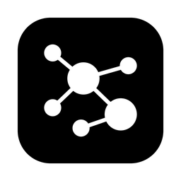

Bedrock
A markdown vault whose graph is the place you work — spatial, durable, plain files.
0 downloads
Unsigned build. On first launch, open System Settings › Privacy & Security and click Open Anyway.

A markdown vault whose graph is the place you work — spatial, durable, plain files.
0 downloads
Unsigned build. On first launch, open System Settings › Privacy & Security and click Open Anyway.